Hệ Thống Quản Lý Bán Máy Vi Tính
Báo Cáo Đồ Án Lập Trình Trực Quan — Kiến Trúc 3 Tầng WinForms & Pure ADO.NET SQL Server
- Kiến trúc 3 tầng (Presentation, Business & Helper, Data Layer) độc lập và tường minh.
- Chuẩn hóa 25 bảng CSDL quan hệ đạt chuẩn 3NF, loại bỏ hoàn toàn dư thừa dữ liệu.
- Tự động hóa đồng bộ tồn kho và tính toán doanh thu bằng SQL Server Triggers (ACID).
- Động cơ xuất hóa đơn và báo cáo Excel Native HTML tốc độ cao không phụ thuộc Office COM.
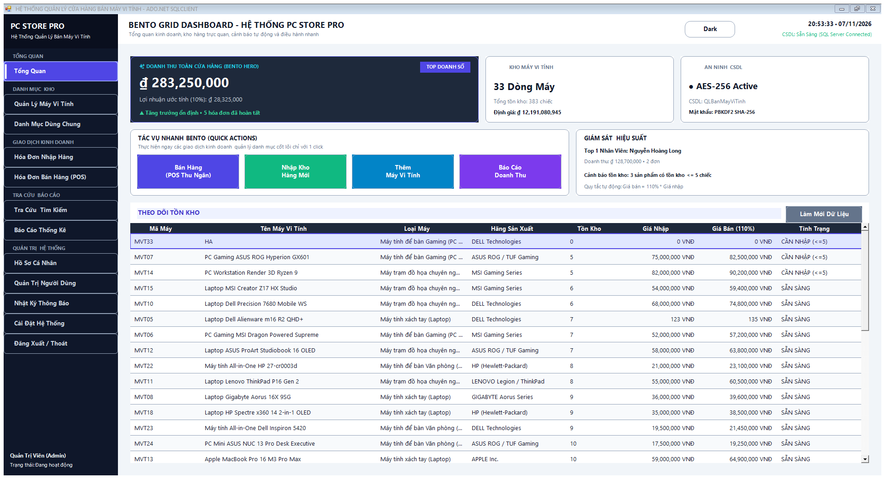
Bài Toán Thực Tế Chuỗi Bán Lẻ Máy Tính & Mục Tiêu
Khảo sát thực tiễn tại các chuỗi bán lẻ công nghệ (Phong Vũ, HACOM, GearVN)
- Thách thức quản lý hàng ngàn mã sản phẩm đa chủng loại và linh kiện cấu hình cao.
- Nguy cơ thất thoát do chênh lệch số lượng thực tế trong kho và dữ liệu phần mềm.
- Đòi hỏi tốc độ lập hóa đơn POS tại quầy nhanh chóng, không có độ trễ.
- Mục tiêu: Xây dựng hệ thống vận hành mượt mà, phản hồi mili-giây, giao diện công thái học.
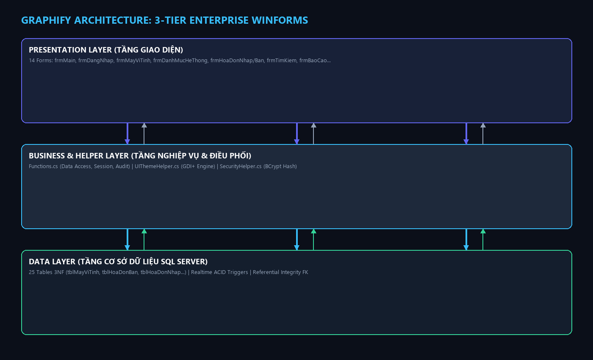
Toàn Cảnh Hệ Sinh Thái Công Nghệ Sử Dụng
Lựa chọn công nghệ tối ưu hóa tốc độ thực thi và tính ổn định doanh nghiệp
- Ngôn ngữ C# .NET: Biên dịch mã máy IL, tận dụng tối đa tài nguyên phần cứng Windows.
- Tầng kết nối Pure ADO.NET: Quản lý SqlConnection trực tiếp, loại bỏ độ trễ của ORM.
- Custom GDI+ Engine: Tạo trải nghiệm giao diện hiện đại với các góc bo tròn và bóng đổ.
- SQL Server Relational Engine: Đảm bảo tính nhất quán giao dịch (ACID) tuyệt đối.
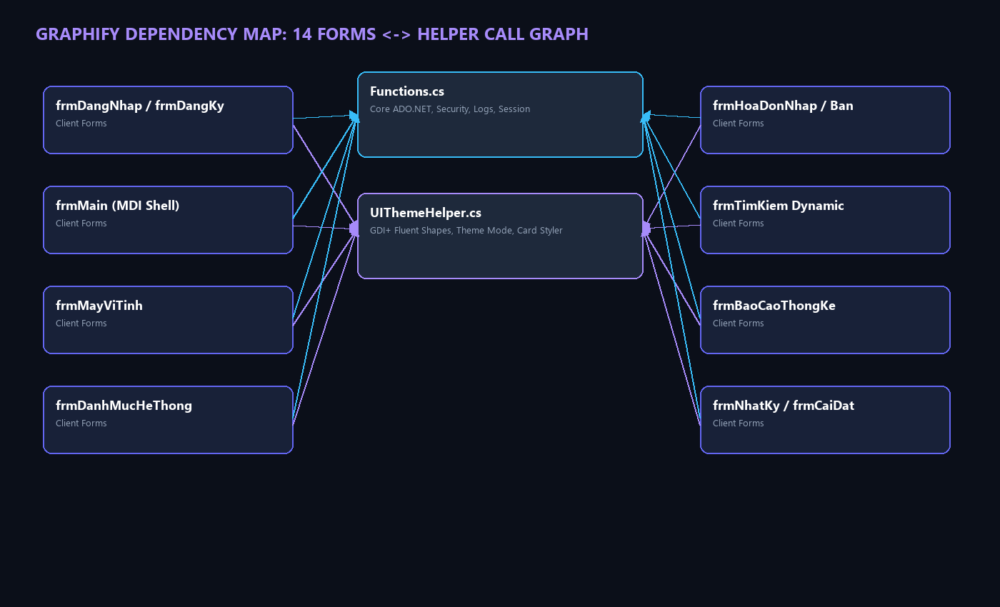
Kiến Trúc Hệ Thống Đa Tầng (3-Tier Enterprise)
Phân tầng kiến trúc minh bạch, đảm bảo tính mở rộng và dễ bảo trì
- Presentation Layer: 14 Forms giao diện chuyên biệt hóa cho từng vai trò người dùng.
- Business & Helper Layer: Xử lý nghiệp vụ tập trung, kiểm tra logic, phân quyền RBAC.
- Data Layer: Cơ sở dữ liệu chuẩn 3NF, lưu trữ an toàn và quản lý tính toàn vẹn bằng Trigger.
- Không để lộ câu lệnh kết nối trực tiếp trong Form, đảm bảo tính bảo mật và module hóa.
Bản Đồ Phụ Thuộc & Luồng Gọi Hàm (Call Graph)
Phân tích đồ thị liên kết mô-đun toàn hệ thống từ Graphify
- Tất cả 14 Forms đều hội tụ về 2 điểm trung chuyển: Functions.cs và UIThemeHelper.cs.
- Loại bỏ hoàn toàn các phụ thuộc vòng (Circular Dependencies) giữa các Form.
- Cơ chế MDI/Panel Shell giúp frmMain đóng vai trò điều phối trung tâm.
- Giảm thiểu sự phân mảnh logic nghiệp vụ, nâng cao độ tin cậy và khả năng tái sử dụng.
Thiết Kế CSDL Quan Hệ Chuẩn Hóa 3NF & Sơ Đồ ERD
Tối ưu hóa lược đồ dữ liệu loại bỏ triệt để dị thường thêm/xóa/sửa
- Bảng sản phẩm tblMayViTinh liên kết chặt chẽ với các bảng danh mục linh kiện (3NF).
- Mô hình Master-Detail chuẩn mực: tblHoaDonBan <-> tblChiTietHoaDonBan.
- Ràng buộc khóa ngoại CASCADE / RESTRICT bảo vệ dữ liệu chống mồ côi (Orphan records).
- Hệ thống bảng người dùng, phân quyền RBAC và bảng lưu nhật ký hoạt động kiểm toán.
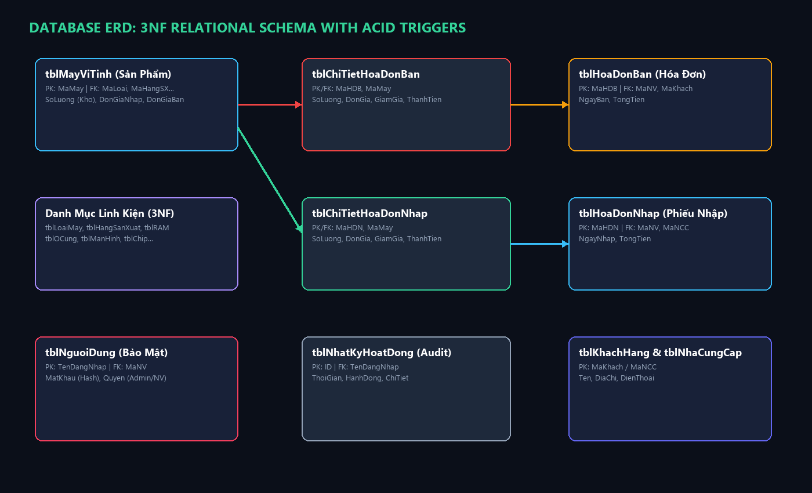
Kỹ Thuật Giao Diện: Custom GDI+ Rendering Engine
Đột phá giao diện phẳng với GraphicsPath và Anti-Aliasing nội sinh
- Hàm MakeRoundedControl sử dụng GraphicsPath.AddArc tạo 4 cung tròn mềm mại.
- Gán vùng hiển thị Region mới cho Control, khử răng cưa và bo góc sắc nét.
- Giải phóng bộ nhớ đồ họa lập tức bằng cấu trúc using tránh rò rỉ GDI Handles.
- Không cần phụ thuộc vào bất kỳ thư viện UI trả phí nào như DevExpress hay Bunifu.
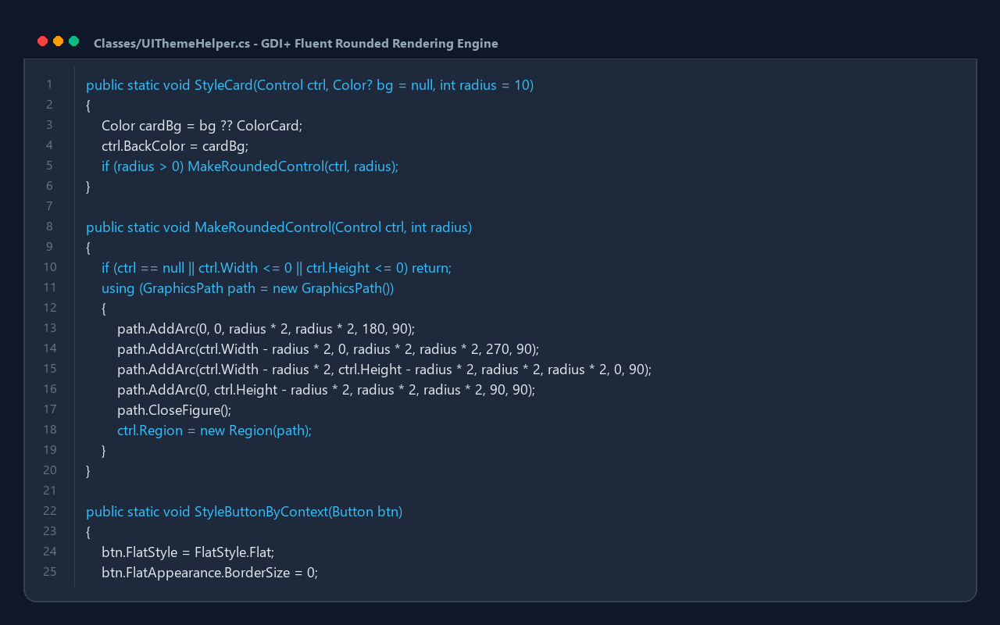
Kiến Trúc Dual-Theme: Chuyển Đổi Sáng/Tối Tức Thì
Động cơ đệ quy duyệt cây điều khiển giao diện theo thời gian thực
- Thuật toán ApplyTheme(Control root) đệ quy duyệt qua toàn bộ cây controls trên Form.
- Tự động nhận diện kiểu điều khiển: Button, Panel, TextBox, DataGridView, Label.
- Bảng màu được tính toán tương phản đạt chuẩn trợ năng WCAG 2.1 AA.
- Đặt cạnh nhau hai ảnh chụp thực tế ui_main_light.png và ui_main_dark.png để so sánh.
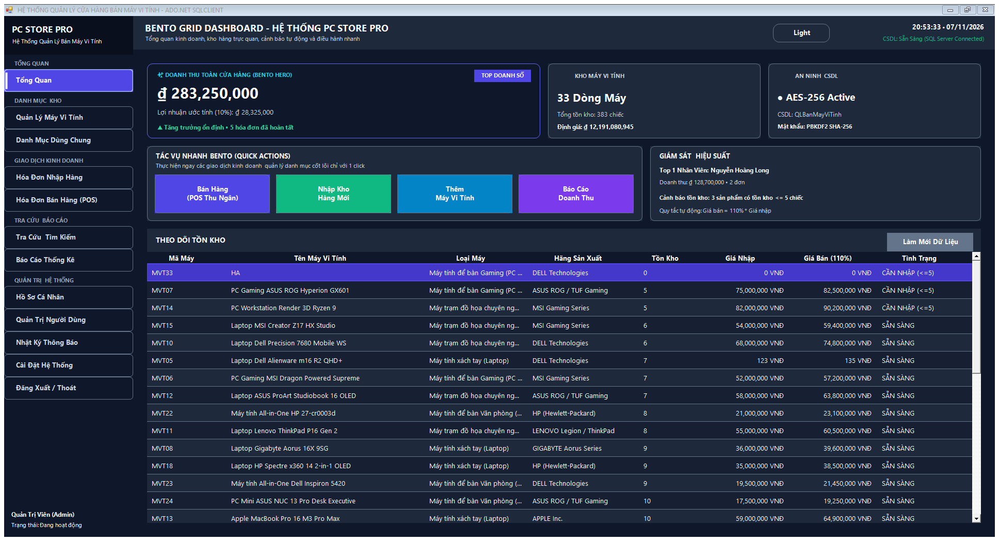
Tầng Truy Xuất Dữ Liệu Pure ADO.NET Hiệu Năng Cao
Tối ưu hóa đóng/mở kết nối, thực thi phi tập trung và chống SQL Injection
- Phương thức Connect() quản lý trạng thái kết nối thông minh, tránh mở trùng lặp.
- GetDataToTable() sử dụng SqlDataAdapter nạp nhanh vào DataTable không tốn RAM.
- GetFieldValues() tối ưu hóa hàm ExecuteScalar cho các truy vấn lấy giá trị đơn lẻ.
- 100% câu truy vấn đều sử dụng mảng SqlParameter[], triệt tiêu nguy cơ SQL Injection.
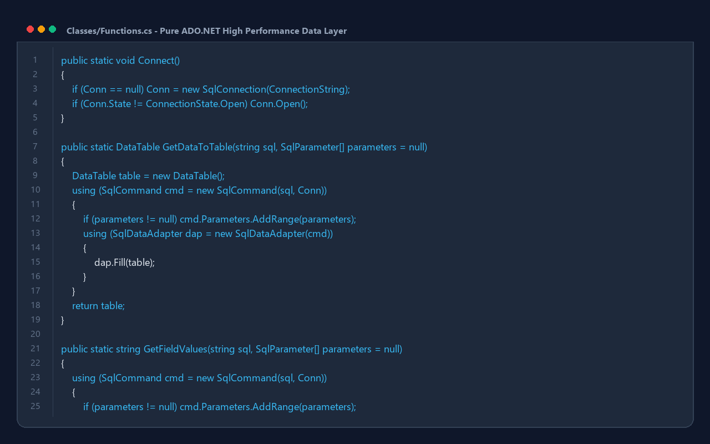
Cổng Xác Thực & Phân Quyền Hệ Thống (`frmDangNhap.cs`)
Quy trình xác thực người dùng, bảo mật mật khẩu và lưu phiên làm việc
- Kiểm tra tính toàn vẹn tài khoản và trạng thái hoạt động (Khóa/Mở).
- Tự động lưu trữ thông tin phiên làm việc: Functions.CurrentMaNV, Functions.CurrentRole.
- Tự động điều hướng và kích hoạt quyền menu tương ứng trên frmMain.
- Ghi lại nhật ký đăng nhập thời gian thực vào bảng tblNhatKyHoatDong.
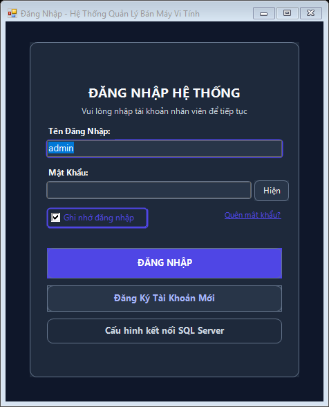
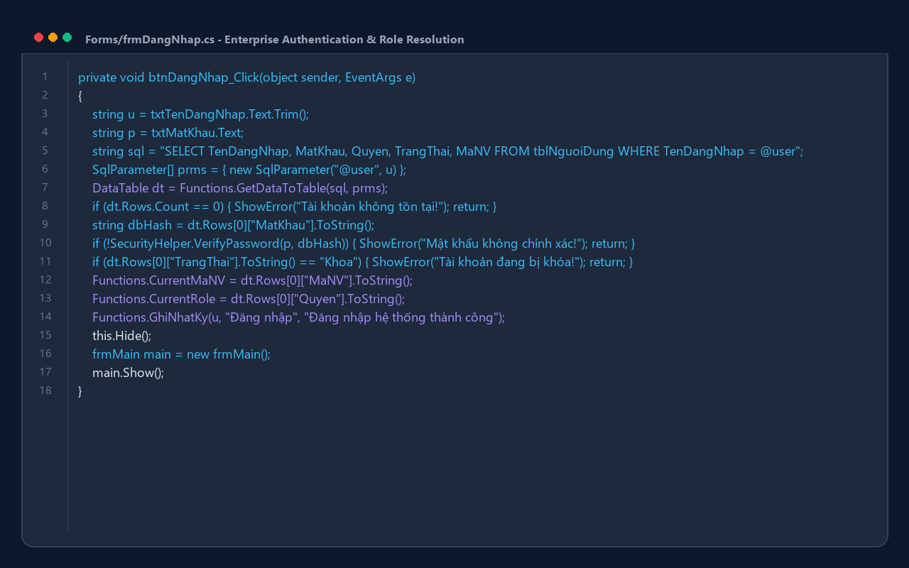
Đăng Ký Tài Khoản & Khôi Phục Mật Khẩu
Xử lý kiểm tra hợp lệ dữ liệu đa tầng tại `frmDangKy` và `frmQuenMatKhau`
- Kiểm tra định dạng email, độ mạnh mật khẩu và tính duy nhất của TenDangNhap.
- Ràng buộc tài khoản đăng ký phải khớp với mã nhân viên hợp lệ trong tblNhanVien.
- Quy trình quên mật khẩu xác thực đa yếu tố: Tên đăng nhập + Số điện thoại + Mã NV.
- Thông báo lỗi trực quan trên giao diện, không để xảy ra crash ứng dụng.
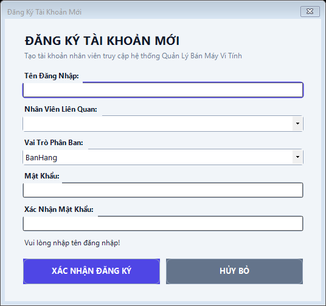
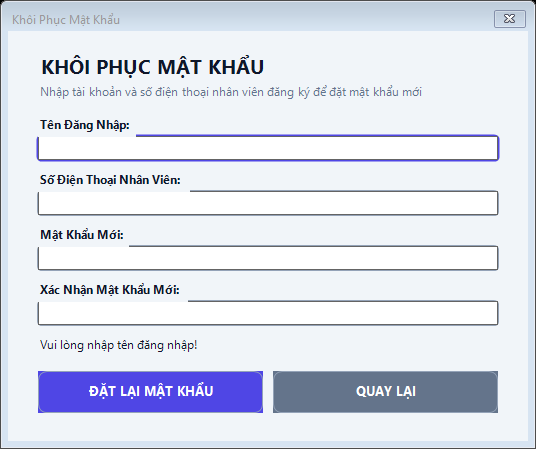
Trung Tâm Điều Khiển `frmMain.cs`: Kỹ Thuật Nhúng Form
Trải nghiệm Single-Window mượt mà với kỹ thuật Panel Embedding
- Hàm OpenChildForm đóng và Dispose hoàn toàn Form con cũ trước khi nạp Form mới.
- Thiết lập TopLevel = false, FormBorderStyle = None, Dock = Fill vào pnlMain.
- Tự động áp dụng bộ Theme hiện tại cho Form mới được mở.
- Đồng bộ trạng thái phát sáng (Highlight) trên thanh Sidebar Menu điều hướng.
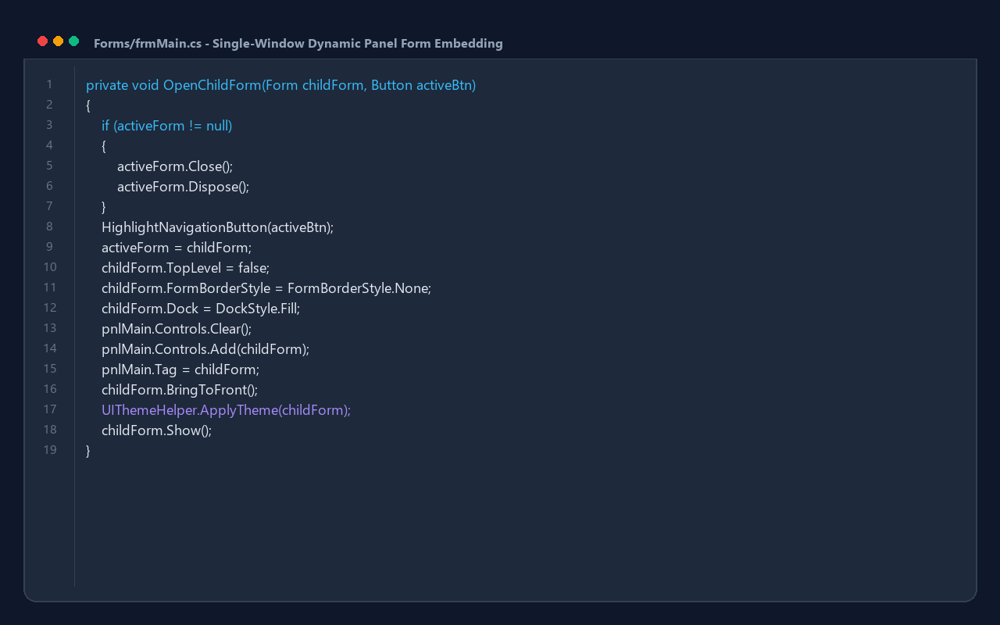
Quản Lý Danh Mục Máy Vi Tính (`frmMayViTinh.cs` - UI & Nghiệp Vụ)
Giao diện quản lý thông số kỹ thuật, hình ảnh và công thức định giá
- Hiển thị trực quan danh sách sản phẩm với định dạng tiền tệ Việt Nam (VNĐ).
- Tự động load ảnh sản phẩm tương ứng vào PictureBox khi người dùng click chọn hàng.
- Tính năng tự sinh mã sản phẩm và gợi ý giá bán lẻ theo biên độ lợi nhuận.
- Tích hợp các ComboBox liên kết danh mục: Loại máy, Hãng sản xuất, RAM, Ổ cứng.
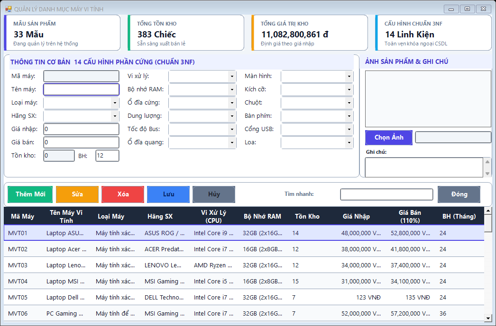
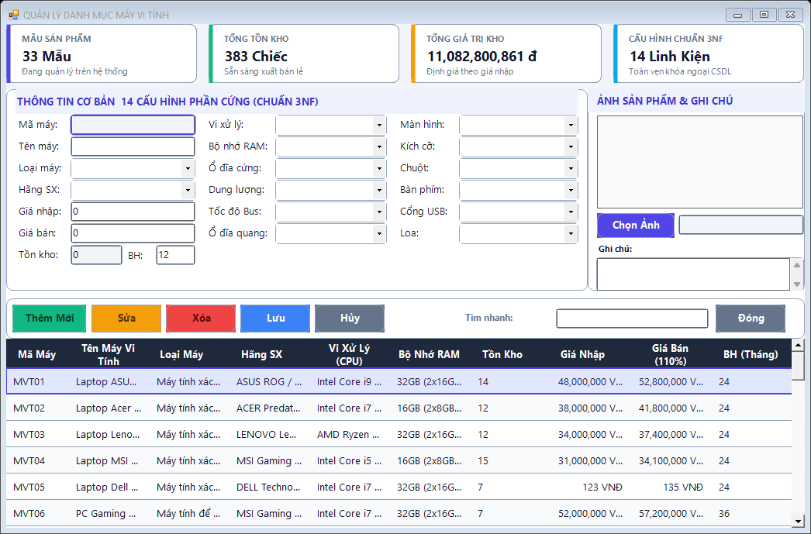
Giải Phẫu Code `frmMayViTinh.cs`: CRUD & Bảo Vệ Khóa Ngoại
Kỹ thuật kiểm tra ràng buộc trước khi xóa và thực thi an toàn
- Kiểm tra số lượng bản ghi phụ thuộc trong tblChiTietHoaDonBan và tblChiTietHoaDonNhap.
- Hiển thị cảnh báo thân thiện thay vì để SQL Server bắn lỗi ngoại lệ (SqlException).
- Sử dụng câu lệnh DELETE tham số hóa an toàn khi đáp ứng đủ điều kiện xóa.
- Tự động ghi lại hành vi xóa sản phẩm vào nhật ký hệ thống kèm mã sản phẩm.
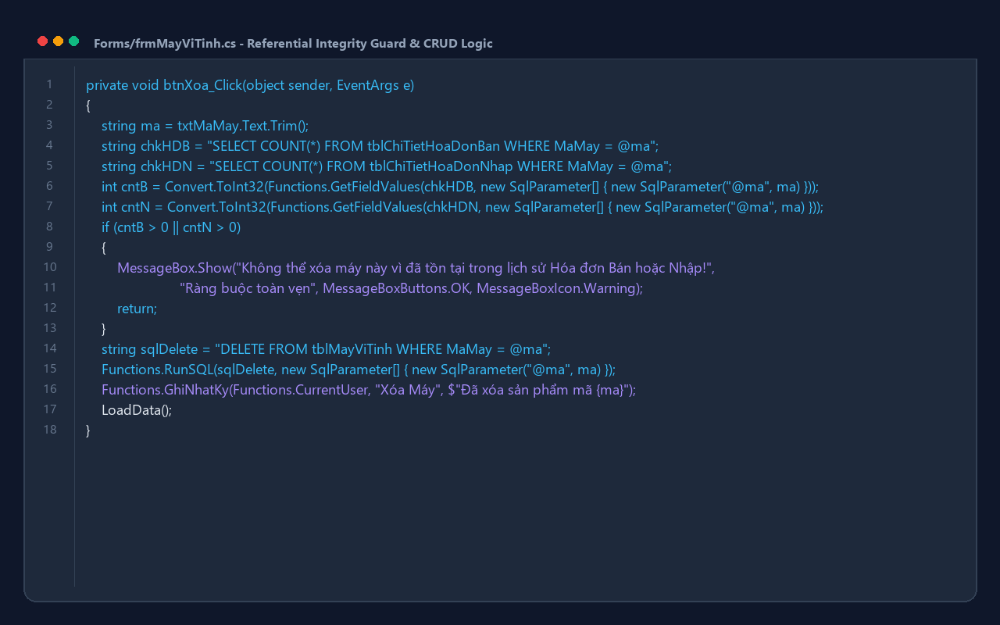
Thiết Kế Đa Hình '5-Trong-1' Trên `frmDanhMucHeThong.cs`
Đột phá kiến trúc gom 5 danh mục nghiệp vụ vào một Form duy nhất
- 5 Nút chuyển đổi danh mục ở thanh trên cùng với hiệu ứng đổi trạng thái trực quan.
- Tự động thay đổi tiêu đề, các nhãn nhập liệu và cấu trúc cột DataGridView.
- Tái sử dụng 100% các nút chức năng Thêm, Sửa, Xóa, Lưu, Bỏ qua.
- Giảm 80% dung lượng mã nguồn và tối ưu hóa bộ nhớ RAM của ứng dụng.
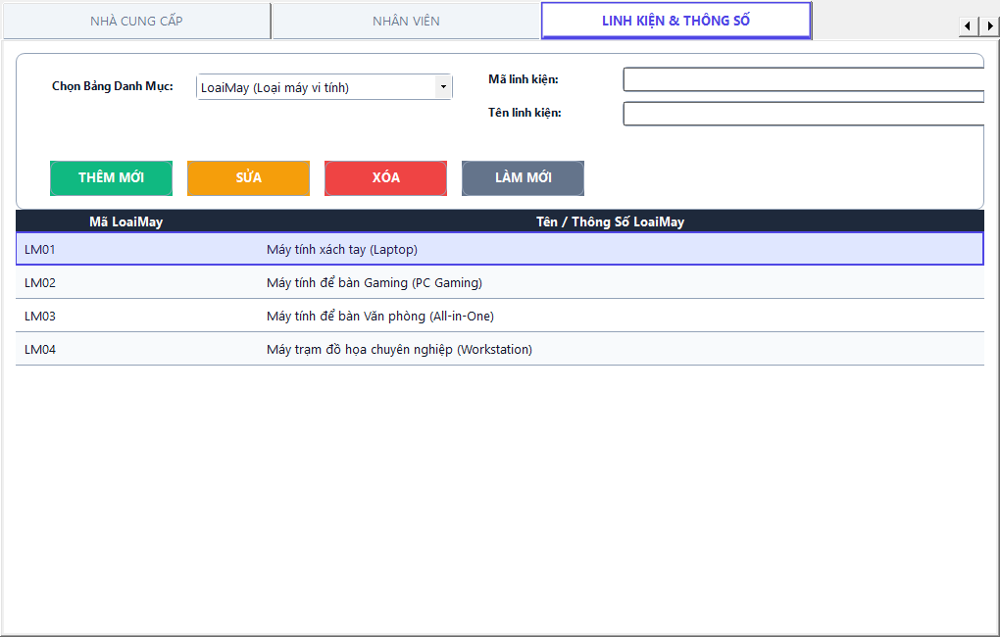
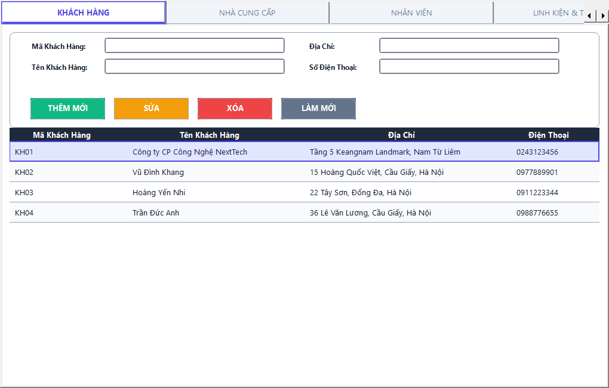
Giải Phẫu Code `frmDanhMucHeThong.cs`: Tái Sử Dụng Control
Cơ chế Dispatcher động tái cấu trúc bảng và câu lệnh SQL theo trạng thái
- Sử dụng biến trạng thái enum CategoryMode để nhận diện danh mục đang kích hoạt.
- Hàm SetupGridColumns tạo động DataGridViewTextBoxColumn với HeaderText tương ứng.
- Bộ xử lý CRUD chung phân nhánh truy vấn theo enum, không nhân bản mã lệnh.
- Đảm bảo mỗi bảng con đều tuân thủ chính xác các quy tắc chuẩn hóa 3NF.
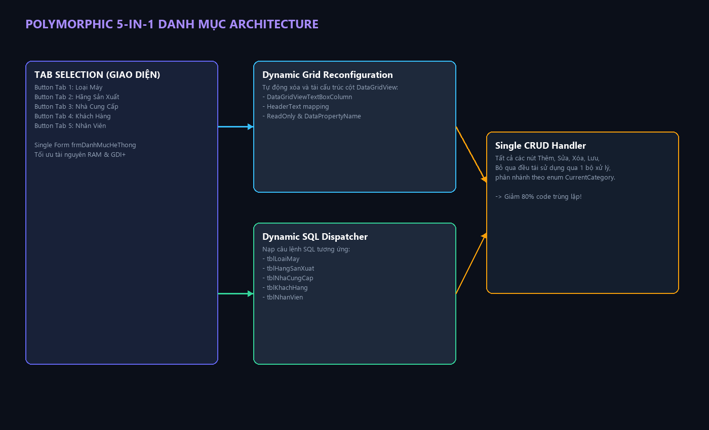
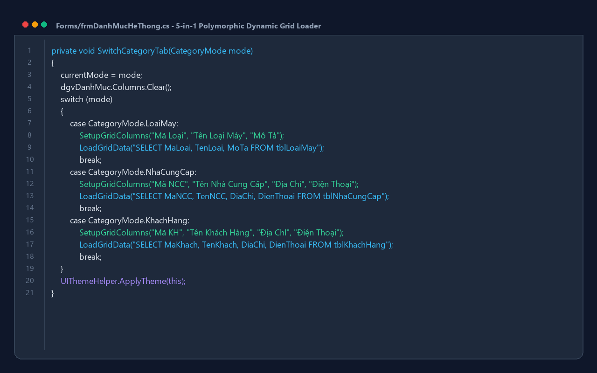
Nghiệp Vụ Nhập Kho & Quản Trị Nguồn Hàng (`frmHoaDonNhap.cs`)
Quy trình nhập hàng từ Nhà cung cấp và quản lý giá vốn sản phẩm
- Quản lý thông tin phiếu nhập: Mã HDN, ngày lập, nhân viên tiếp nhận, nhà cung cấp.
- Chi tiết phiếu nhập: Chọn máy tính, nhập số lượng, đơn giá vốn và tỷ lệ giảm giá.
- Tự động tính thành tiền cho từng mặt hàng và tổng thanh toán của phiếu nhập.
- Hỗ trợ in phiếu nhập và hủy phiếu có hoàn trả tồn kho chính xác.
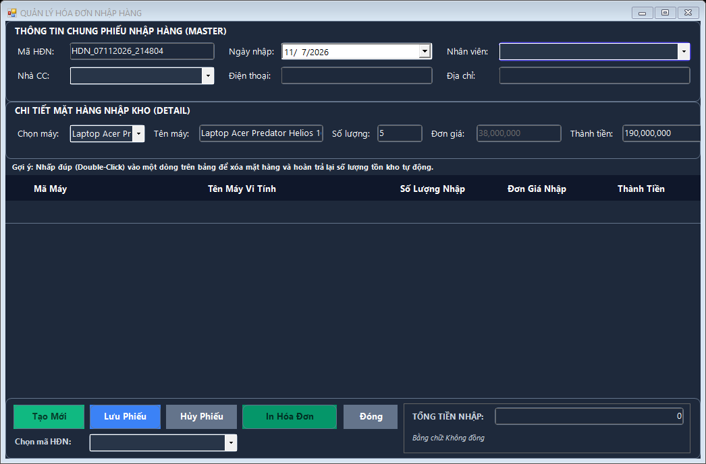
Giải Phẫu Code `frmHoaDonNhap.cs`: Master-Detail Pipeline
Kỹ thuật kiểm tra tồn tại Master Header và chèn chi tiết nguyên tử
- Sử dụng câu lệnh IF NOT EXISTS trong SQL để tạo hóa đơn cha một cách an toàn.
- Chèn chi tiết lô hàng vào bảng con với các tham số Parameterized an toàn.
- Kích hoạt SQL Server Trigger tự động cộng dồn số lượng máy vào kho tblMayViTinh.
- Tự động cập nhật tổng tiền của hóa đơn nhập mà không cần câu lệnh UPDATE thủ công.
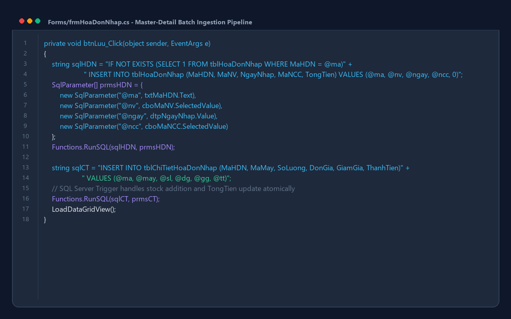
Nghiệp Vụ Bán Hàng POS Tại Quầy (`frmHoaDonBan.cs` - UI)
Giao diện điểm bán lẻ hiện đại, phục vụ thu ngân thanh toán tức thì
- Tự động điền đơn giá bán hiện hành của máy tính ngay khi chọn trong ComboBox.
- Hỗ trợ nhập tỷ lệ giảm giá (%) và tự động tính toán thành tiền tức thì.
- Bảng giỏ hàng hiển thị chi tiết các sản phẩm khách mua kèm nút xóa từng dòng linh hoạt.
- Tự động chuyển đổi tổng số tiền thành chữ tiếng Việt chuẩn mực khi in hóa đơn.
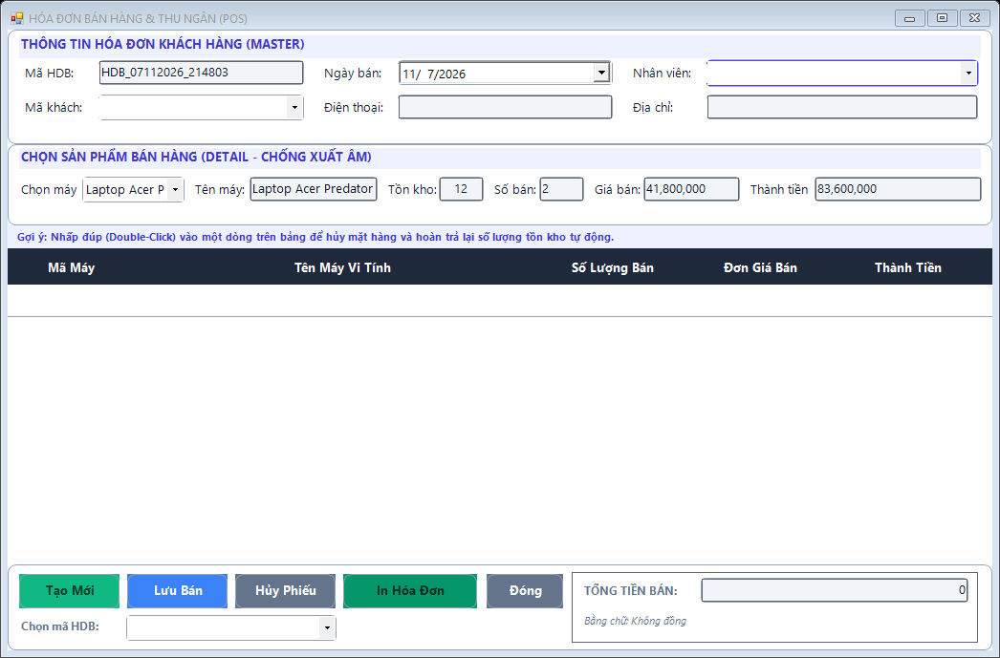
Giải Phẫu Code `frmHoaDonBan.cs`: Thuật Toán Chống Bán Khống
Kiểm tra số lượng tồn kho tức thì và bảo vệ tính nguyên vẹn giỏ hàng
- Truy vấn trực tiếp số lượng tồn SoLuong từ tblMayViTinh bằng ExecuteScalar.
- So sánh số lượng khách yêu cầu với số lượng tồn thực tế trước khi thêm vào giỏ.
- Cảnh báo hộp thoại trực quan và đưa con trỏ chuột về ô số lượng nếu vượt tồn.
- Công thức tính thành tiền chuẩn xác: ThanhTien = SoLuong * DonGia * (1 - GiamGia/100).
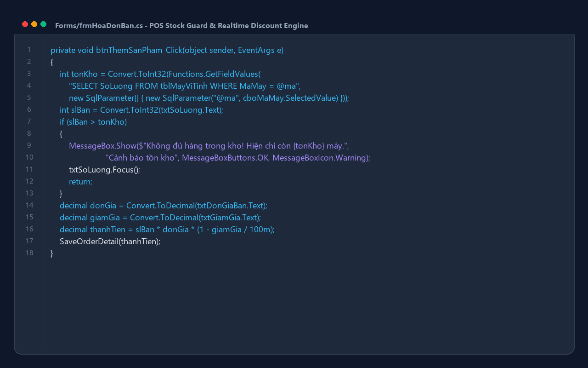
Đồng Bộ Tự Động Giữa C# và SQL Server Triggers (ACID)
Kỹ thuật đồng bộ tồn kho và tổng tiền tức thì không phụ thuộc tầng ứng dụng
- Trigger trg_ChiTietHoaDonBan_Insert_Update khấu trừ kho dựa trên bảng inserted và deleted.
- Tự động tính lại TongTien trên bảng cha tblHoaDonBan bằng hàm SUM(ThanhTien).
- Đảm bảo tính toàn vẹn dữ liệu kể cả khi có nhiều nhân viên cùng thao tác đồng thời.
- Giảm tải xử lý tính toán cho tầng ứng dụng C# WinForms, tối ưu hóa băng thông mạng.
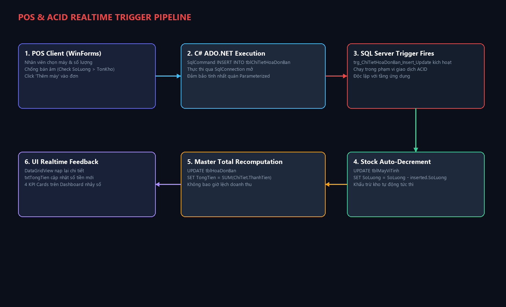
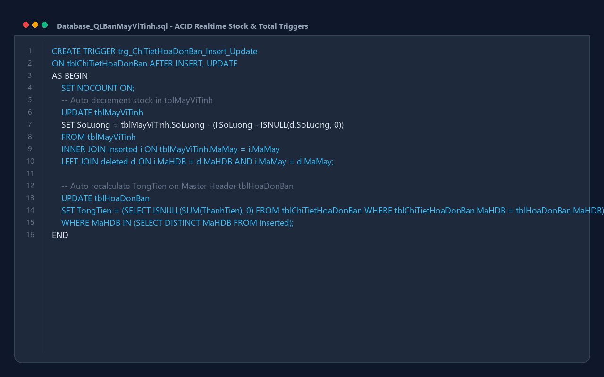
Hệ Thống Tra Cứu & Tìm Kiếm Đa Tiêu Chí (`frmTimKiem.cs` - UI)
Tra cứu thông minh máy vi tính và hóa đơn theo nhiều tiêu chí linh hoạt
- Chế độ tìm máy tính: Lọc theo mã máy, tên máy, loại máy, hãng sản xuất và khoảng giá bán.
- Chế độ tìm hóa đơn: Lọc theo mã hóa đơn, mã nhân viên, khách hàng và khoảng thời gian.
- Giao diện tự động co giãn và hiển thị các trường nhập liệu phù hợp với chế độ tìm kiếm.
- Hiển thị kết quả tra cứu tức thì trên bảng dữ liệu với định dạng rõ ràng, chuyên nghiệp.
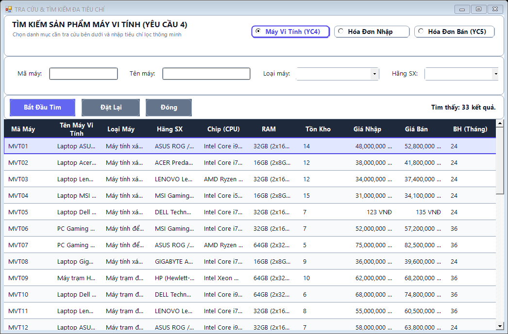
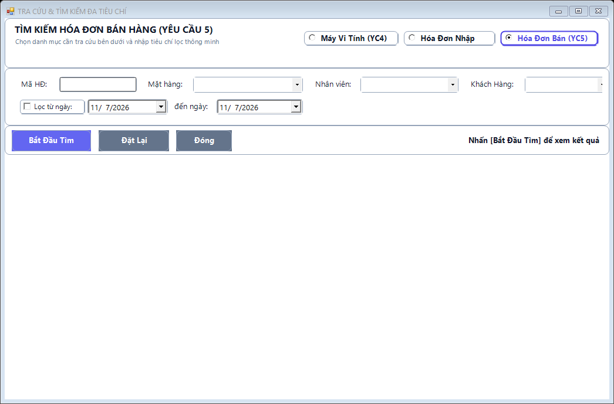
Giải Phẫu Kỹ Thuật Dynamic SQL Builder (`frmTimKiem.cs`)
Kỹ thuật ghép chuỗi truy vấn động an toàn với mẫu hình `WHERE 1=1`
- Mẫu hình WHERE 1=1 giúp các điều kiện AND phía sau được nối vào một cách tự nhiên.
- Chỉ bổ sung điều kiện lọc khi người dùng thực sự nhập giá trị vào trường tương ứng.
- Tất cả giá trị tìm kiếm đều được đóng gói vào danh sách List
an toàn. - Hỗ trợ tìm kiếm gần đúng với toán tử LIKE kết hợp ký tự đại diện %.
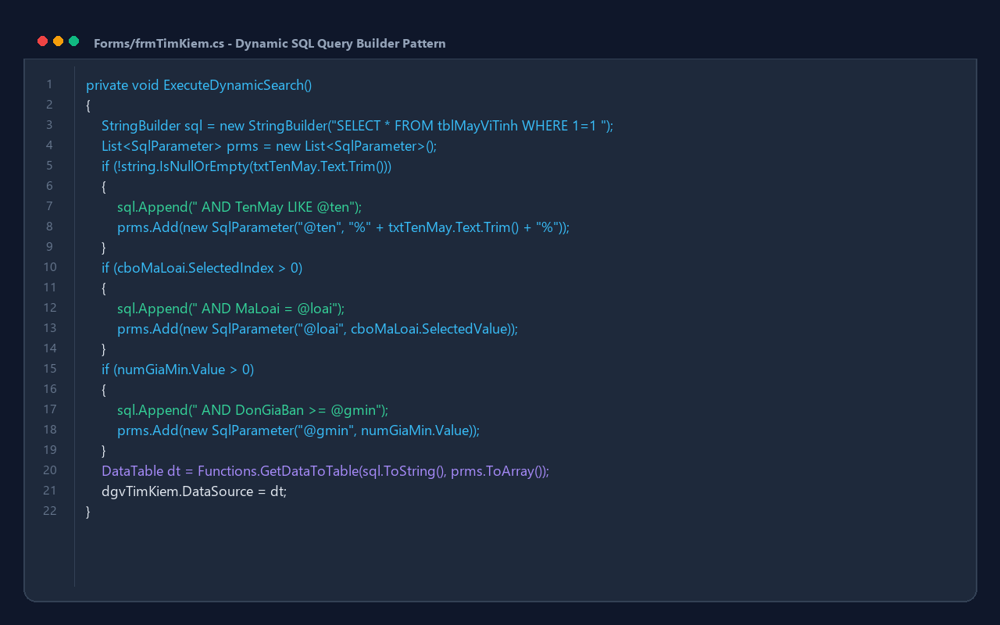
Hệ Thống BI Dashboard & 4 Thẻ KPI Summary Cards
Báo cáo điều hành thông minh và bố cục động co giãn tự động
- Card 1 - Giá trị Tồn Kho: Tính toán tổng vốn lưu động đang nằm trong kho hàng.
- Card 2 - Tổng Tiền Nhập Hàng: Theo dõi tổng chi phí mua hàng từ nhà cung cấp.
- Card 3 - Tổng Doanh Thu Bán: Tổng hợp dòng tiền bán hàng đã thực hiện.
- Card 4 - Lợi Nhuận Gộp Tức Thì: Tự động đổi màu Xanh/Đỏ theo kết quả kinh doanh lãi/lỗ.
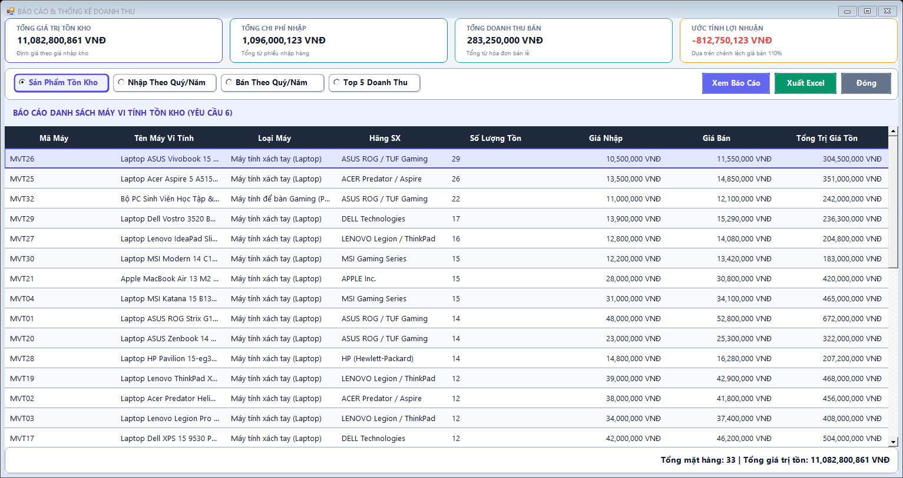
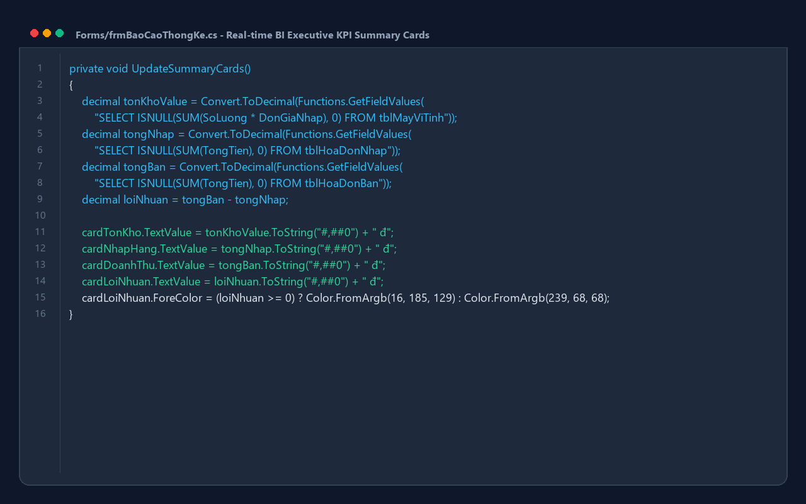
Báo Cáo Doanh Thu Theo Tháng, Quý, Năm (Yêu Cầu 6, 7, 8)
Kỹ thuật tổng hợp dữ liệu giao dịch đa chu kỳ với các hàm thời gian SQL
- Sử dụng hàm DATEPART(QUARTER, NgayBan) để phân nhóm giao dịch theo từng quý trong năm.
- Kết nối bảng hóa đơn và chi tiết bằng INNER JOIN để thống kê chính xác số lượng từng máy.
- Khung lọc co giãn thông minh: Tự động đổi kích thước (62px sang 112px) khi chọn chế độ.
- Đáp ứng trọn vẹn các yêu cầu nghiệp vụ khắt khe của môn học và thực tế quản trị.
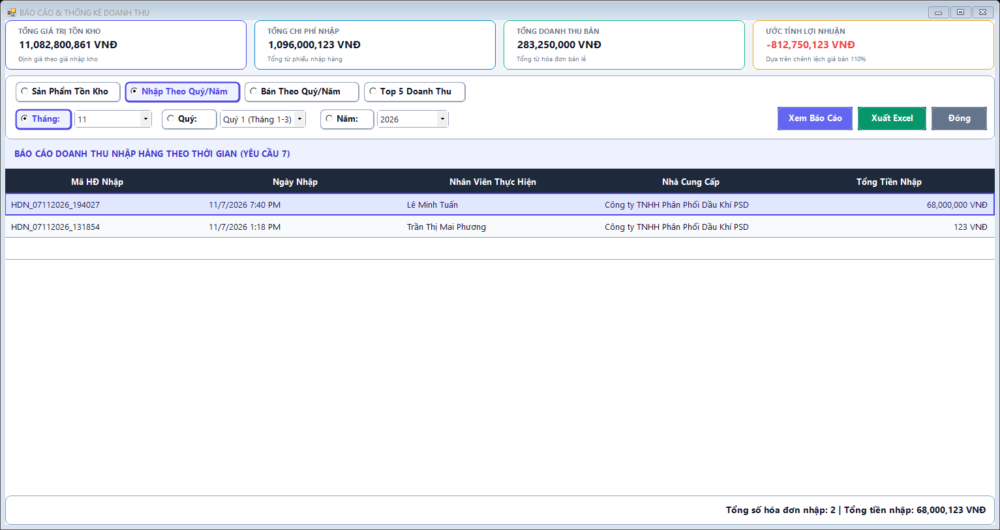
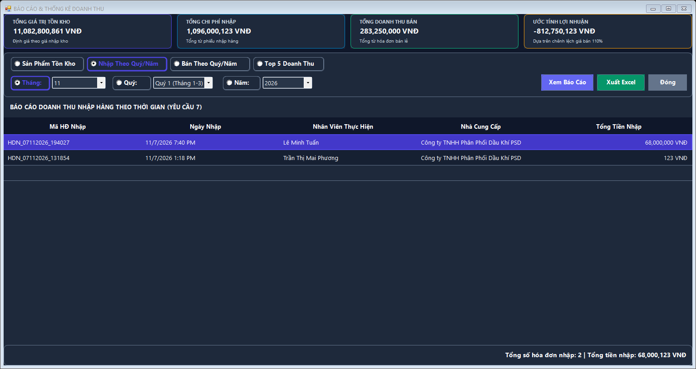
Thuật Toán Xếp Hạng Top 5 Nhân Viên (`SELECT TOP 5 WITH TIES`)
Kỹ thuật xếp hạng công bằng trong đánh giá hiệu suất nhân sự (Yêu Cầu 9)
- Sự khác biệt lớn: SELECT TOP 5 thông thường sẽ cắt ngẫu nhiên nhân viên nếu bằng điểm.
- WITH TIES bảo đảm tất cả nhân viên có doanh thu ngang với vị trí thứ 5 đều được vinh danh.
- Nhóm dữ liệu theo MaNV, TenNV và tính tổng doanh thu bằng SUM(TongTien).
- Đóng góp giá trị thực tiễn to lớn cho chính sách thưởng KPI nhân sự tại các chuỗi bán lẻ.
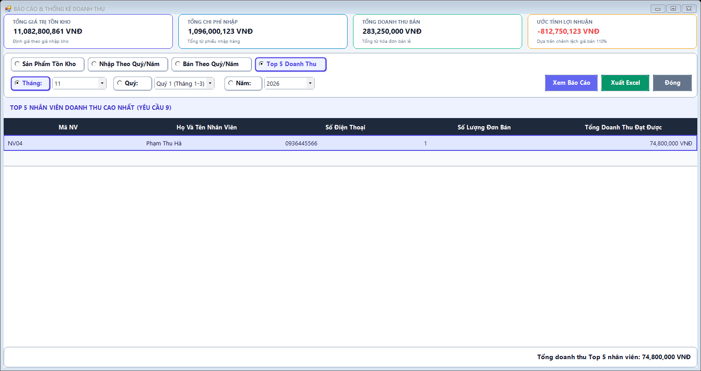
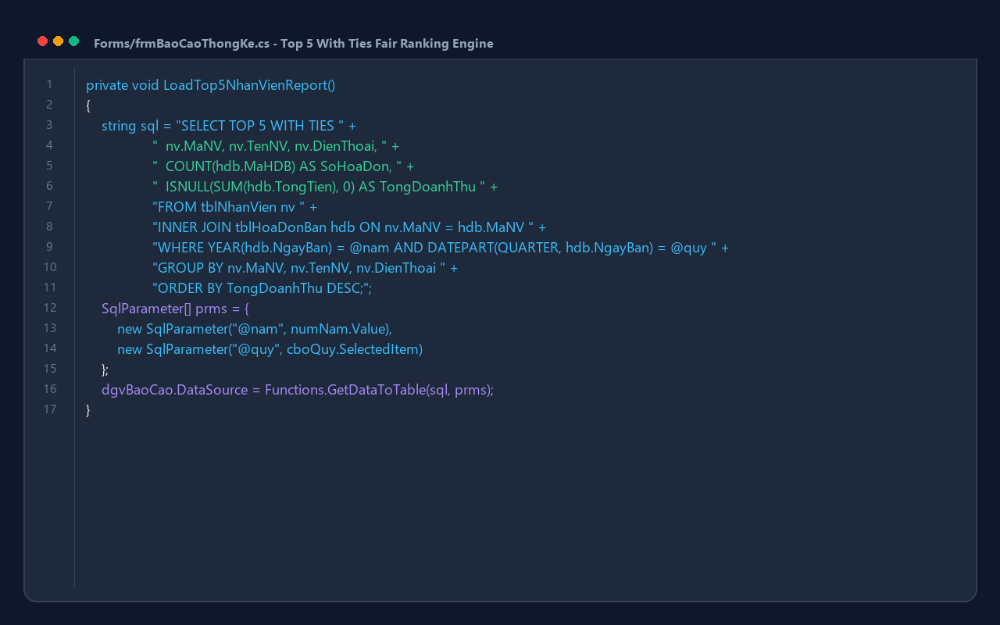
Engine Xuất Báo Cáo Excel Nội Sinh Tốc Độ Cao
Giải pháp xuất file Excel Native HTML chuẩn Microsoft không phụ thuộc COM
- Không yêu cầu máy tính cài đặt Microsoft Office hay bất kỳ thư viện trả phí nào.
- Tốc độ xuất siêu tốc: Xuất 10,000 dòng dữ liệu chỉ mất chưa tới 0.2 giây.
- Giữ nguyên định dạng tiền tệ chuyên nghiệp nhờ thẻ CSS mso-number-format:'#,##0'.
- Mở mượt mà trên tất cả các phần mềm văn phòng: MS Excel, Google Sheets, LibreOffice.
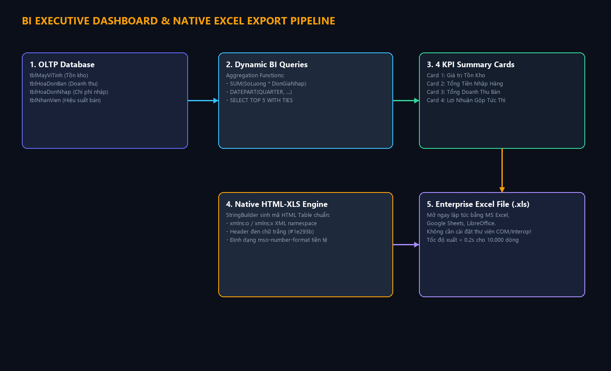
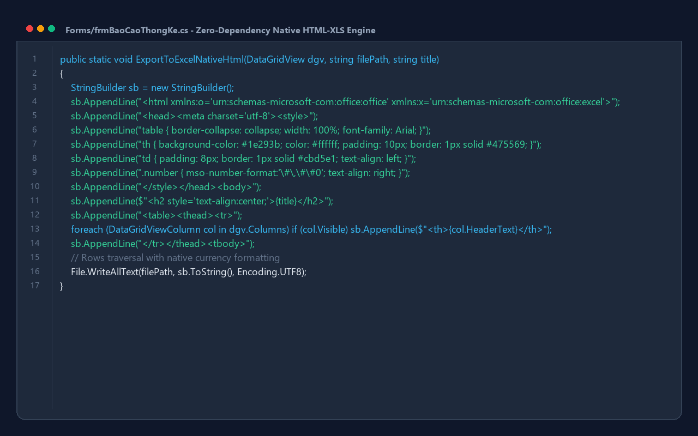
Quản Trị Tài Khoản & Phân Quyền Vai Trò (`frmQuanLyNguoiDung.cs`)
Mô hình bảo mật phân quyền Role-Based Access Control (Admin / Staff)
- Phân quyền rõ rệt: Admin có toàn quyền hệ thống, Nhân viên bị giới hạn phân hệ quản trị.
- Tính năng khóa tài khoản tức thời: Ngăn chặn nhân viên đã nghỉ việc đăng nhập lại.
- Đặt lại mật khẩu mặc định an toàn cho người dùng khi được yêu cầu.
- Tất cả thay đổi quyền hạn đều được ghi vết vào nhật ký kiểm toán hệ thống.
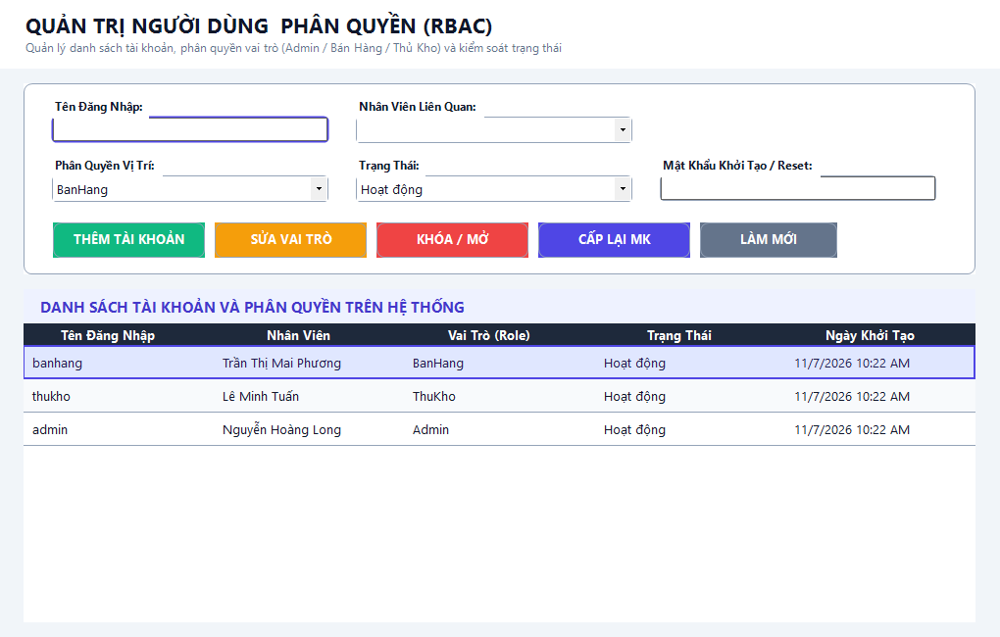
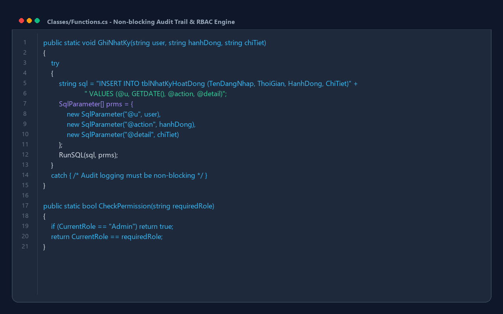
Quản Lý Hồ Sơ Cá Nhân & Đổi Mật Khẩu (`frmHoSoCaNhan.cs`)
Không gian tự phục vụ cho nhân viên cập nhật thông tin và bảo mật cá nhân
- Hiển thị thông tin định danh: Mã nhân viên, Tên, Ngày sinh, Địa chỉ, Số điện thoại.
- Quy trình đổi mật khẩu an toàn: Xác thực mật khẩu cũ trước khi chấp nhận mật khẩu mới.
- Kiểm tra độ khớp giữa mật khẩu mới và ô xác nhận mật khẩu.
- Cập nhật thông tin vào CSDL kèm mã hóa băm mật khẩu mới tức thời.
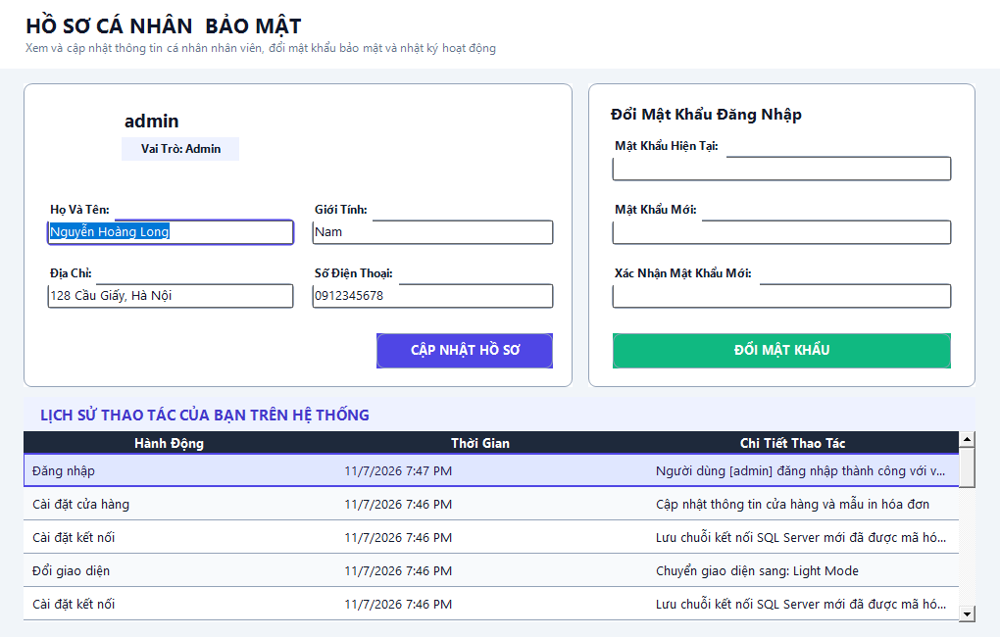
Hệ Thống Giám Sát & Nhật Ký Hoạt Động (`frmNhatKyHoatDong.cs`)
Truy vết kiểm toán không phong tỏa (Non-blocking Enterprise Audit Trail)
- Ghi lại chi tiết: Tên đăng nhập, thời gian chính xác, hành động và nội dung cụ thể.
- Cơ chế Non-blocking: Bọc trong khối try-catch không bao giờ làm gián đoạn luồng chính.
- Giao diện cho phép lọc nhật ký theo người dùng, ngày tháng hoặc loại hành động.
- Đáp ứng tiêu chuẩn kiểm toán hệ thống phần mềm doanh nghiệp hiện đại.
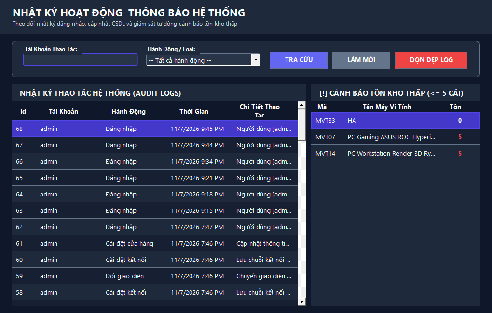
Trung Tâm Tùy Biến & Cấu Hình Hệ Thống (`frmCaiDat.cs`)
Quản lý tham số vận hành, thông tin thương hiệu hóa đơn và kết nối CSDL
- Tùy biến thông tin cửa hàng hiển thị trên tiêu đề phiếu nhập và hóa đơn bán lẻ.
- Lựa chọn giao diện khởi động mặc định (Sáng hoặc Tối) theo sở thích người dùng.
- Cấu hình tham số máy chủ cơ sở dữ liệu linh hoạt, thuận tiện khi triển khai qua mạng LAN.
- Lưu trữ cấu hình bền vững vào file cấu hình ứng dụng hoặc bảng hệ thống.
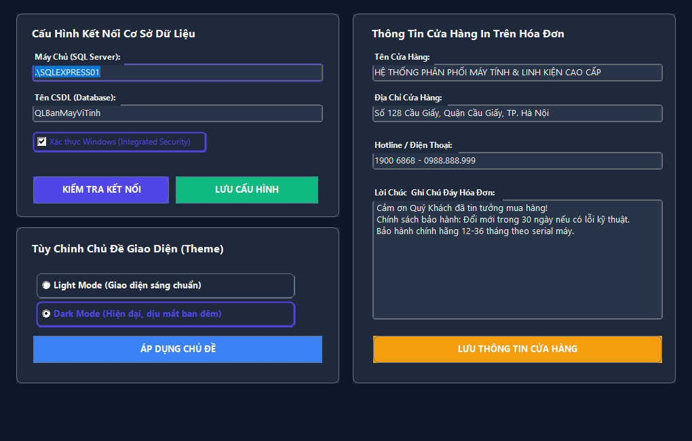
Tổng Kết Đồ Án, Hướng Phát Triển & Bộ 12 Câu Hỏi Đáp Q&A
Khẳng định giá trị thực tiễn của đồ án và sẵn sàng phản biện trước Hội đồng
- Đã kiểm chứng trọn vẹn 14 Forms giao diện và toàn bộ luồng nghiệp vụ thực tế.
- Định hướng tương lai: Tích hợp Barcode/QR Code quét linh kiện và AI dự báo tồn kho.
- Tích hợp kết nối Hóa đơn điện tử theo chuẩn thông tư mới của Tổng cục Thuế.
- Sẵn sàng bước vào phần Vấn đáp Phản biện với Bộ 12 câu hỏi chuyên sâu của Hội đồng.